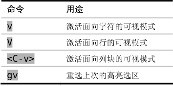
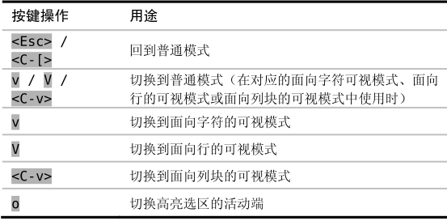
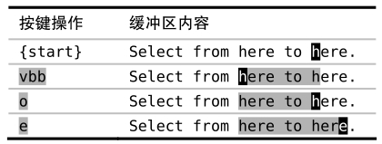

技巧21选择高亮选区
可视模式的3个子模式用于处理不同类型的文本。我们将在本节看到如何激活每种子模式，以及如何在它们之间切换。
Vim有3种可视模式。在面向字符的可视模式中，我们能够选择任意的字符范围，不论它是单个字符，还是位于一行内，或是跨若干行的指定字符范围，都没问题。该模式适用于操作单词或短语。如果我们想对整行进行操作，我们可以改用面向行的可视模式。而面向列块的可视模式则允许我们对文档中的列块进行操作。列块可视模式非常特别，所以我们会在技巧24、技巧25和技巧26中花大量篇幅对其进行介绍。
激活可视模式
v键是通往可视模式的大门。在普通模式下，按v可激活面向字符的可视模式，按V（v和Shift键一起按）可激活面向行的可视模式，而按<C-v>（v和Ctrl键一起按）则可激活面向列块的可视模式，请参见下表中的汇总：

gv命令是个有用的快捷键，它用来重选上一次由可视模式所选择的文本范围。不管上个选区是面向字符的、面向行的，或是面向列块的，gv命令都能够正确地工作。不过如果上次的选区被删除了，它也许会工作得不太正常。
在可视模式间切换
我们可以在不同风格的可视模式间切换，方式跟在普通模式下激活可视模式的方式相同。如果当前处于面向字符的可视模式，我们可以按V来切换到面向行的可视模式，或是用<C-v>来切换到面向列块的可视模式。然而，如果在面向字符的可视模式中再次按v，就会回到普通模式。所以，你可以把v键当成在普通模式及面向字符的可视模式间转换的开关，V及<C-v>键也一样可以在普通模式及其对应的可视模式间切换。当然了，你总是可以按<Esc>或<C-[>回到普通模式（就像退出插入模式那样）。下表总结了在可视模式间进行切换的命令：

切换选区的活动端
高亮选区的范围由其两个端点界定。其中一端固定，而另一端可以随光标自由移动，我们可以用o键来切换其活动的端点。在定义选区时，如果定义到一半时，才发现选区开始的位置不对，此时用这个键会很方便，我们用不着退出可视模式再从头开始，只需按一下o，然后重新调整选区的边界即可。下面的操作对此功能进行了演示：
